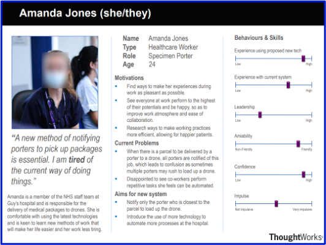
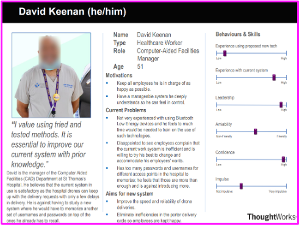

Algorithms
The process of defining and refining project requirements.
Project Background and Partner

Project Goals
- 1
- 2
- 3
- 4
- 5
Requirement Gathering
Personas
Amanda
Amanda is a member of NHS staff at Guy's Hospital. Her job as a porter is to load up drones with medical packages in response to requests sent to her by laboratory staff. She is unhappy with the current system at the hospital as, whenever there is a parcel to be delivered, all porters are notified, regardless of their location in the hospital. This, as described by her, is an inefficient and tiring process as there is no reason to notify every porter to make a delivery when the porters could be easily located, and the request should be sent to the nearest one to the package. Amanda is a person that tries to continually make improvements to her methods of work, in order to make them more efficient and save herself the extra time and effort. She is eager to see her co-workers do the same as she feels it will make them happier and improve the overall atmosphere at the hospital and hence, working conditions. She has noted that she is not much of a leader, which means that it is unlikely she would speak up about this issue, so she really appreciated us taking into consideration her thoughts when designing our prototypes for the new application.
Finally, she also feels that a new system would be beneficial to everyone at the hospital as it will be easier to use than the old, outdated technologies currently in use.
David
David is the manager of the Computer-Aided Facilities (CAD) department at St. Thomas's hospital. Like Amanda, he is also a potential user of our system, however, he has a different opinion on the system currently in use for the drone delivery of pharmaceuticals. He believes that the current system in use is somewhat satisfactory as the hospital drones can keep up with the delivery requests with only a few delays in delivery. He would rather not study a new system, where he would have to memorize another set of usernames and passwords on top of the ones he already has to remember. David, though, wants to keep all his employees happy, so if there was no other option left by his employees, he would be willing to change his mind and understands the potential benefits and improvements that our proposed solution would provide. David also describes himself as a person of high leadership and confidence so it is understandable that he would want a system that he can study and be in complete control of which would allow him to guide his staff whenever an issue arises.
In general, he would like a system that efficiently deals with the priority-scheduling of the delivery of packages, allows users to view where porters are located and is relatively simple to use.